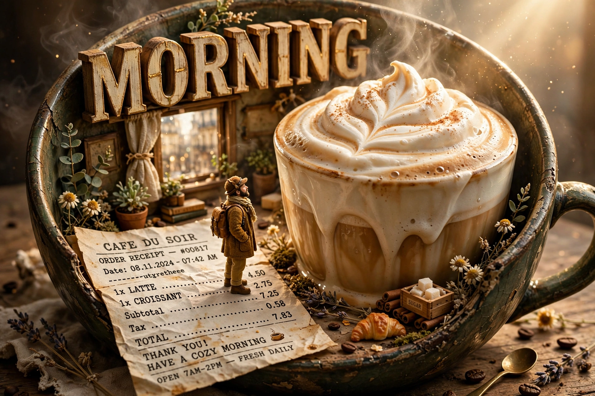

Good Morning Coffee (miniature)
PHOTO PROMPT — GOOD MORNING COFFEE | MINIATURE MAN ON A RECEIPT Hyper-realistic cinematic photography featuring a cozy coffee miniature diorama, a cut

Nội dung prompt
PHOTO PROMPT — GOOD MORNING COFFEE | MINIATURE MAN ON A RECEIPT Hyper-realistic cinematic photography featuring a cozy coffee miniature diorama, a cute coffee character, a whimsical morning fantasy, 3D typography, miniature human-scale photography, premium coffee advertising, a warm vintage aesthetic, ultra-detailed, photorealistic textures, realistic materials, cinematic lighting, 8K resolution, depth of field, and a magical morning atmosphere. CORE CONCEPT A highly detailed miniature coffee world set on a dark brown wooden table, filled with roasted coffee beans, cute coffee cups, a motivational sign, chocolate biscuits, a classic coffee grinder, and "good morning" themed decorations. The entire scene is bathed in caramel brown, cream, beige, and golden tones, illuminated by the warm glow of the morning sun. 1. MAIN TYPOGRAPHY At the top of the image, there is large 3D lettering: “GOOD MORNING” The word “GOOD” is a deep coffee-brown with a glossy finish, while “MORNING” is a golden cream color. The typography is bold, rounded, and raised, featuring realistic shadows and dark brown edges. A small white coffee cup—complete with a smiling face, rosy cheeks, and happy eyes—sits beside the text. Tiny coffee beans and splashes of chocolate adorn the surrounding area. 2. CUTE COFFEE CUP CHARACTER In the center-left, there is a large white coffee cup featuring an adorable 3D cartoon-style face. It has large, round brown eyes, expressive eyebrows, rosy cheeks, and a happy, smiling mouth. Inside the cup is a cappuccino with a heart-shaped latte art design. The cup has tiny, realistic arms and legs—resembling a 3D figurine—and is wearing cream-brown sneakers with white laces. One of its hands holds a small black espresso cup labeled “COFFEE ANSWERS.” 3. ADDITION OF A MINIATURE MALE CHARACTER ON A COFFEE RECEIPT Add a tiny, realistic-looking man, scaled to be very small in comparison to the coffee cup and surrounding objects. He is sitting in a relaxed pose on a cream-colored coffee receipt (or note) placed toward the front of the table. The miniature man has a handsome face, short, slightly messy black hair, realistic eyes, a relaxed and adorable expression, natural skin texture, and well-proportioned anatomy. He is wearing a black t-shirt with the small inscription “Doni p’te,” dark blue jeans, and white sneakers. His legs dangle over the edge of the receipt. One hand rests on the paper to support his body, while the other holds a tiny black coffee cup. Beside him lie a small pen and a few coffee beans. His expression suggests he is enjoying a peaceful morning, as if taking a break after ordering his coffee. Ensure the miniature man is clearly visible, with sharp facial details, a body size consistent with a miniature scale, natural shadows cast onto the paper, and convincing physical interaction with the receipt. Avoid making him look like a sticker or a flat image. 4. COFFEE MOTIVATION SIGN In the middle-right section, place a wooden-framed sign featuring clear, decorative lettering that reads: “The day can bring its questions... I’ll bring the coffee.” Use a combination of handwritten-style typography, bold lettering, and small heart accents. The sign is slightly tilted and features a vintage paper texture, faint coffee stains, and natural shadows. 5. COFFEE-THEMED DESK ACCESSORIES - A small burlap sack labeled “FRESH IDEAS INSIDE.” - A classic wooden coffee bean grinder labeled “GOOD THOUGHTS GRINDER.” - A black cup with the inscription “STRONG COFFEE KIND HEART.” - A white plate containing chocolate chip cookies, each decorated with a small smiling face. - A spiral-bound notebook titled “TODAY’S PLAN,” featuring a playful list: “OVERTHINK,” “WORRY,” “DOUBT,” and “COFFEE”—the latter marked with a checkmark. - A small note that reads, “MẬP MÊ AI.” - Coffee beans scattered naturally across a wooden tabletop. - An industrial-style black pendant light fitted with a warm, yellow-hued bulb. - A small green plant placed near a window, bathed in morning light streaming in from the left. 6. LIGHTING AND COMPOSITION Golden morning sunlight enters from a window on the left, blending with the warm, yellow glow of the pendant light. Incorporate ambient occlusion, global illumination, soft shadows, realistic reflections, cinematic color grading, macro photography, a shallow depth of field, and a creamy bokeh effect. A vertical composition featuring the words "GOOD MORNING" dominating the upper section; a coffee cup character serves as the primary focal point on the mid-left, with a motivational sign on the mid-right, while a tiny figure of a man sitting on a notepad adds an engaging detail toward the bottom center. Maintain highly realistic textures—including wood, coffee grounds, burlap, ceramic, paper, and human skin. All elements appear cohesive, forming a warm, creative, charming, and captivating three-dimensional miniature scene. FINAL STYLE: Hyper-realistic cinematic miniature photography, adorable 3D coffee characters, realistic tiny human, premium commercial coffee advertisement, warm caramel color palette, ultra-detailed, crisp focus, natural shadows, 8K, portrait aspect ratio 9:16. NEGATIVE PROMPT: blurry, low resolution, flat illustration, plastic-looking human skin, distorted face, deformed hands, extra fingers, extra limbs, floating objects, incorrect shadows, inconsistent miniature scale, duplicated characters, unreadable typography, misspelled words, oversaturated colors, harsh lighting, messy composition, watermark, unwanted logo.
Prompt cùng thể loại
- prompt qc wallet - coffee
Create a photorealistic cinematic luxury commercial using the reference coffee-cup image. Start with the…
- thực don cho quán
COFFEE & BEVERAGES MENU Theme: A magical bakery menu comes alive in one continuous gliding shot — the camera…